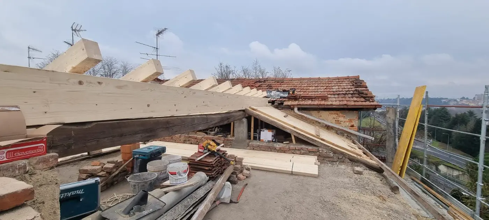

- Home
- Progetti
Progetti e realizzazioni.
Fotografie scattate nei cantieri dell'impresa e, in una sezione separata, immagini di ispirazione architettonica.
Dai nostri cantieri.
Fotografie reali di lavori in corso: demolizioni, strutture, coperture e isolamenti. Clicca su un'immagine per ingrandirla.
Nessuna immagine in questa categoria.
Si tratta di immagini scattate durante i lavori, in fase di cantiere: non mostrano interventi conclusi.
Ispirazione architettonica.
Immagini illustrative di architettura e interni contemporanei, utili per immaginare il risultato. Non sono lavori realizzati da Impresa Edile Leonardo.
Nessuna immagine in questa categoria.
Fotografie di terzi con licenza gratuita (Unsplash), usate a solo scopo illustrativo.
Vuoi parlarci del tuo intervento?
Raccontaci cosa hai in mente: possiamo fissare un sopralluogo e valutare insieme il lavoro.